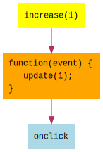

In the previous lesson, 03 - Update Model, we added a button
to the view and associated a function to onclick. That function made a change to the model
and re-rendered the view with the updated model.
var increase = function(_event) {
model = model + 1;
m.render(element, view(model));
};
Notice that the function above needs to "know" about the details of how to re-render the view:
m.renderelementmodelview function.That's a lot of details tied into that function! We do not want these details tied into view functions. As we build larger applications, we'll have more view functions and more event handler functions, and we don't want all these references tied in everywhere.
Let's extract those details out into an update function:
var update = function(value) {
model = model + value;
m.render(element, view(model));
};
Now the increase function just needs to call update(1) to increase the value by 1 and re-render
the view. As you will see, this update function will only be in one place.
Our increase function can now be:
var increase = function(_event) {
update(1);
};
And a decrease function could be:
var decrease = function(_event) {
update(-1);
};
But instead of having separate functions for what are just different values that we pass to
update, we can write a single function that gets the amount by which to increase, and
returns a function that calls update with that amount:
var increase = function(amount) {
return function(_event) {
update(amount);
};
};
As you can see, functions are values and, like other values, they can be returned as a result of calling a function. They can also be passed as values to other functions.
So what does this buy us? We can call increase(1) and increase(-1) to associate event handlers
to the increase and decrease buttons:
m("button", { onclick: increase( 1) }, "+1"),
m("button", { onclick: increase(-1) }, "-1")
Remember that onclick needs a function(event), and that is what we are getting by calling
increase(1) and increase(-1).

createView functionI mentioned that the update function would be defined in one single place. Since the view
needs update, we'll write a createView function that receives update as a parameter:
var createView = function(update) {
var increase = function(amount) {
return function(_event) {
update(amount);
};
};
var view = function(model) {
return [
m("div", "Counter: " + model),
m("button", { onclick: increase( 1) }, "+1"),
m("button", { onclick: increase(-1) }, "-1")
];
};
return view;
};
By receiving update as a parameter, our createView function is not tied to anything outside of
the function itself. It does not reference update as a global variable.
Also notice that createView is another function-that-returns-a-function. After setting up the
increase event handler, it creates and returns the view function, which continues to be a
function that takes a model and returns a view.
Here is the complete example:
By extracting the details out of the increase function and passing in update as a parameter,
we've separated the application code from the Meiosis pattern setup code. The
application code is concerned with creating views, event handlers, and issuing updates, without
being tied to any details about data flow and rendering. The Meiosis pattern setup code takes care
of the "wiring up" - initializing the model, setting up the update function, creating the view
function, and rendering the results onto the page. As we build larger applications, the application
can grow and only need to know about the passed-in update function. The Meiosis pattern setup
code only needs to be written once, and does not need to change as we build more features in the
application code.
1. Then, change how the model gets updated, by
multiplying instead of adding the incoming value. Verify that +1 has no effect, -1
only changes the sign, and +5 and-5 multiply by 5 and -5 respectively.When you are ready, continue on to 05 - Stream.